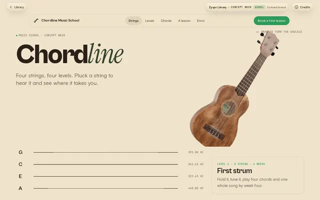
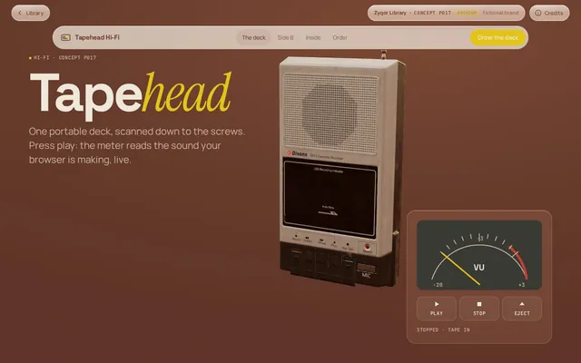
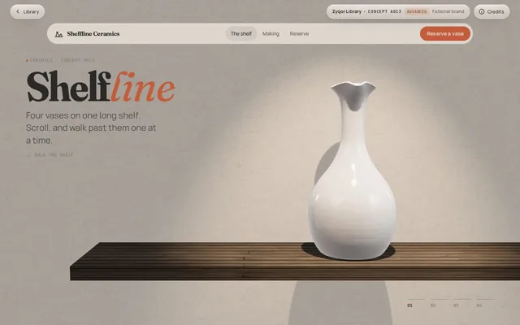
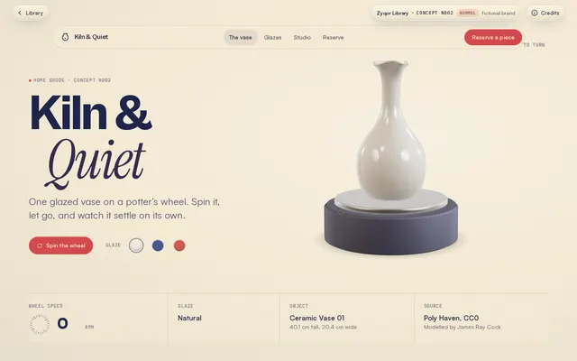
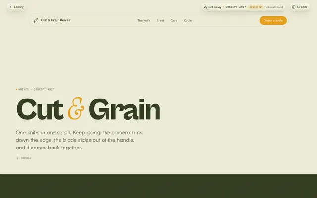
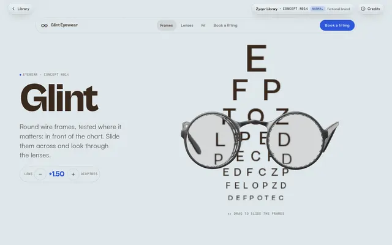
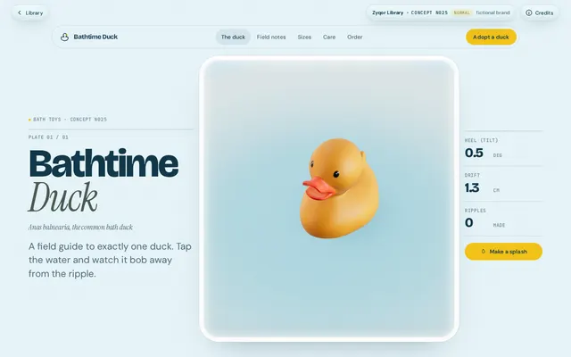
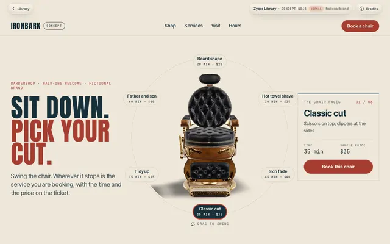

Component · marquee
Marquee
A seamless loop that speeds up with your scroll, flips direction when you scroll back, and can be grabbed and flung. Accessible clones, pauses off-screen.
Vanilla JS2.2 KBDrag + inertiaScroll velocityReduced motion
Words · speeds up when you scrollDrag it
Loose leafslow brewedSmall farmsno dust
Chips · reverses with scroll direction · pauses on hover
Images · Zyqor concept renders








Use it
Copy the folder marquee/ (the .js and .css files) into your project. No build step and no framework.
Behaviour
- Clones are
aria-hiddenand their links gettabindex="-1", so keyboard and screen-reader users meet each item once. - Drag works with mouse and touch (horizontal only; vertical swipes still scroll the page) and keeps inertia after release. A drag never fires a click on a link inside.
- Pauses when off-screen (IntersectionObserver), on mouse hover and while something inside has focus.
- Re-measures after web fonts load and when the width changes.
prefers-reduced-motion: nothing moves; the row is a normal horizontal scroller.
Credits
- Scroll-reactive marquees appear across award winners, for example landonorris.com (Awwwards Site of the Year 2025) and Don't Board Me (SOTY 2024). Written from scratch.
- Images are Zyqor's own renders from the concept library (models credited on each concept page). Kettle & Co. is fictional.
<link rel="stylesheet" href="marquee.css">
<div class="mq" data-marquee data-speed="70" data-scroll-flip aria-label="Our values">
<div class="mq-track">
<div class="mq-item">Loose leaf · slow brewed · small farms ·</div>
</div>
</div>
<script type="module" src="marquee.js"></script>| Option | Default | What it does |
|---|---|---|
| data-speed | 60 | Pixels per second at rest. |
| data-direction | left | left or right. |
| data-boost | 0.9 | How much page-scroll velocity speeds it up (0 = ignore scroll). |
| data-scroll-flip | off | Reverse direction while the page scrolls up. |
| data-no-pause | off | Keep moving under the mouse. |